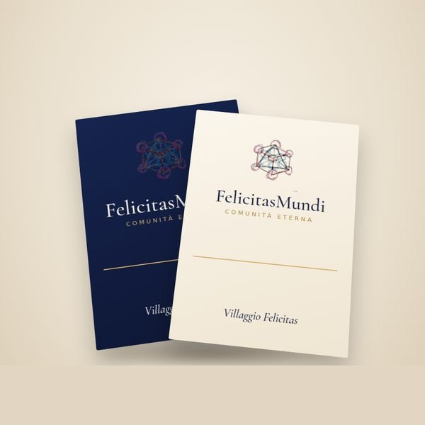
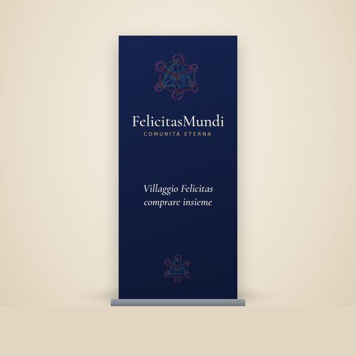
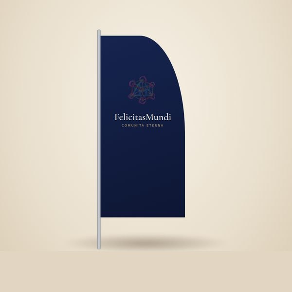
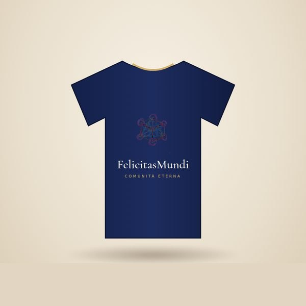

2000 PRODOTTI ED ESPOSITORI FIERISTICI
Stampa
Oltre alla stampa proponiamo supporti per l'esposizione fieristica e altri prodotti utili alla comunicazione. Scegli la famiglia, poi il formato, la carta e quante copie.
IL KIT FIERA




Kit fiera2500 volantini A5 · 1 roll-up 85 × 200 · 2 striscioni 200 × 100 · 30 maglie (10 M · 10 L · 10 XL). Ogni riga si può cambiare.
leggo il prezzo da Flyeralarm…
LE FAMIGLIE

Carta stampatavolantini, manifesti, locandine, biglietti da visita, cartelline, adesivi

Libri e cataloghilibri, riviste, cataloghi, fascicoli

Agende e calendariagende, calendari, quaderni e taccuini

Esposizione e fieretotem, roll-up, striscioni, stand, insegne, pellicole per vetrine

Confezioni e imballaggishopper, imballaggi, bicchieri, tovaglioli, confezioni regalo

Gadget e regalipenne, cordini, portabadge, borse, borracce

Abbigliamentomagliette, felpe, tessuti personalizzati
Album fotograficofotolibri, foto da parete, calendari fotografici
LA CARTA CHE SCEGLIAMO
Cerchiamo materiali naturali: volantini in carta riciclata o naturale, riciclabili al 100%. Manifesti su cartoncino con oltre il 90% di fibre di legno riciclate. Bicchieri, tovaglioli e confezioni per alimenti biodegradabili, che si smaltiscono nell'organico.
E dove si può, la stampa a impatto climatico zero: un piccolo sovrapprezzo che va in progetti di protezione del clima certificati.